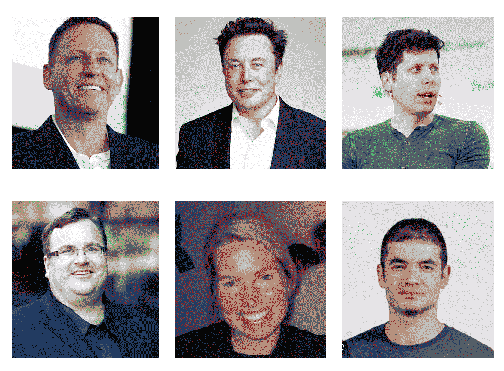

¶
üóì Week 13-15 / 17 January - 7 February 2023
making sense and meaning¶
with Tomas Diez
Tomas introduced this course in the first session as a platform for debate, for dialogue and exchange. We talked about bringing in personal questions (such as, How to be as designers?, What are our worldviews?), and aiming to generate more and more questions instead of searching for answers. Tomas mapped out this beautiful space for conversation. I was excited; this seemed all in line with my practice, aiming to create spaces for dialogues, stories, spaces for listening and perceiving other worldviews rather than reinforcing one’s own.
Yet in practice it all looked somehow different. During the last three classes (31.01, 17.01, 28.02) I practiced my patience and my listening. We met online, and via shared screens were exposed to presentations that left some room for questions at their very end. In a cold BCN apartment, with a hot water bottle at my feet, staring at a screen with 20 muted emojis of people who have their cameras off, it is far-fetched to talk about a conversation, and me, being normally very engaged and not word shy, I sit still, gathering my bouncing thoughts that do not find a physical space to resonate in.
We spoke with (or better our guest spoke to a screen-recording) Benno Huarez from the rural coffee zone in Pero, he found the ‚Äúfloating fab lab‚Äù in the amazon which aims to connect the nine countries the amazon river is flowing through starting in the small rainforest town Iquitos. He planted an image of ‚Äúdesign‚Äù in our heads that reminds a tree: growing up in the air ‚Äì thriving towards what feeds it (satisfaction from reaching our passions) yet at the same time being rooted deeply in the ground, depending on the resources available. Building on this metaphor, he makes us realize that it is not only what is available that is important, but above all what we make of it. The areas around the Amazon are home to an estimated 30% of the world’s species, a large part of the Earth’s biodiversity. And the resources that these species have at their disposal are all the same. In this sense, we are not limited by the resources we have, but by our idea of what we can do with the resources we have.
We spoke with Felencia Hubarat from Indonesia who showed us into the beauty and diversity of the artistic and cultural fields in Indonesia. She engages in space-creation that support the local social infrastructures surrounding the arts and culture (AC) movement. As an example, she describes how she facilitates women gathering to cook together and exchange recipes, as well as everyday life stories.
We spoke with Sudebi Thakurata from India who calls herself a meta facilitator and narrative designer. With her collective d-epicenter they practice to write-with, design-with, imagine-with the people at hand. They do this by “connecting the dots and looking at the larger picture while not overlooking the small, delving into a process if inquiry in an experimental, context-specific, transformational way that can blend economy with ecology, self with the society, past with the future, content with context and concept”.
Again, my eyes are shining throughout her talking and I can just see all the alignments in what my practices aims to facilitate – letting people tell (their) stories, disrupting the thinking in limits and dichotomies and placing ourselves within a wider universe of interconnections.
The three seem to have found their practice of impact. The point of leverage from which meaning, and significance arises. Where does that leave me? And my practice? What do I take out of this that helps to define sense and meaning arising from my actions? Are there patterns within these talks or maybe in the way we were involved in these talks that deal with the question With what tools can we design the transition towards worlds in which systems of extraction are reconfigured?

Discloser: I am writing the following essay partly with the help of ChatGPT that Tomas encouraged us to explore. ChatGPT is a tool that was launched in 2022 by the artificial intelligence research group OpenAI, that learns from the data with which it is fed. And till this point, who is feeding data into it, are white middle-aged man living and being socialized in North-American and Eurocentric-realities. It is not a intelligence generating tool but solely a text generating tool.
As I will argue later more in detail, speculating about something in the future is linked to what is experiences in the past. ChatGPT does not experience in the way I do. Its memories are made solely from the information it gets and thus are its outputs. This bears the danger of not only amplifying and reinforcing but also reproducing the “experiences” it has.
Towards a world of speculative imagining¶
I argue that one of the main tools we have at hand to transition towards another world-structure, is our (human) ability of imagining. Since we were able to memorize and speculate, to think in rational terms, imagination has been the basis for the realisation of transitions. However, this tool is often overshadowed by techno-utopian movements that seek to rebuild the future from scratch with new technologies and digital tools that promise to ease and fasten creative processes. The question I will address is whether an accelerated and easier process of creativity is satisfactory when it comes to giving sense and meaning to individual practices – and thus to caring communities?
There are signs that creative practices are slowly diminishing due to capitalism’s emphasis on productivity (=efficiency + profit maximization). A prioritization of short-term economic gains over long-term thinking is not only preventing young (and old) minds to imagine the unthinkable but also devaluating the importance of memorize experiences (individual as well as collective, inherited ones; human as well as the attentiveness towards more-than-human infrastructures such as we can observe in forests and ants colonies). Memory and imagination are interconnected because the process of imagining the new is always fed by what has been experienced (the old). The competitive nature of the market economy, where “survival of the fittest” is the law of order, makes time-intensive practices and experimentation without the known (such as imagining and dreaming) risks that are therefore rarely taken.
There are also signs that the quest for sense and meaning is throwing more and more people into insecurities that lead to increasingly serious psychological problems. Linking sense and meaning to performance in terms of universal productivity and fulfilment keeps us in a constant state of comparison, where the global platforms constantly confront us with the goodness of unknown others; we are constantly bombarded with messages and images that suggest that other people are living more meaningful and fulfilling lives than we are. Our worth as human beings is based on how much we can produce or achieve which understandably leads to a sense of pressure to constantly perform and be successful, which then contributes to mental health problems.
Listening to the three guest, Benno Huarez, Felecia Hubarat and Sudebi Thakurata, it appears that the globalized economy of making things easier sometimes makes us think it simplicity where there is complexity and makes things more complex when there is simplicity. All three experience the meaningfulness of what they do by having an impact on their immediate environment. We know that we cannot know how the world works because the complexity with which the earth is in constant transition is so complex that we are not able to think it (truly complex and not fixed, let alone comprehensible with universal rules, laws, solutions). But through imagination we can think up complexities that do not need to be understood. To imagine means to stop and memorise something and then to invent impossible worlds in our minds (actually simple: it’s the stories we tell ourselves to go to sleep, the poems we write to express our feelings, the environments in which we picture our homes).
In a conversational podcast about futurism and ancestrality, Joey Ayoub and Daniel Mcmillen Voskoboynik talk about the concept of rationality which is the basis of our social systems and involves evaluating information (data) and changing cultural habits according to that data. However, it is widely known that in many topics (e.g. coping with climate emergencies, dealing with social welfare and human rights…) politics and societies act contrary to the data, and to explain this paradox, the concept of realism has been developed. Realism suggests that some behaviors cannot be adapted as the data of the real suggest because they are incompatible with how the structures of societies are interpreted and perceived by those with power. In this sense, the excuse of realistic obstacles when it comes to adapting behaviour, laws and rules to what is necessary is basically just an explanation for a man-made structure into which we want to fit the world. And it simply won’t. So, our realistic world system is anything but rational or linked to whats observable data of the real.
Speculative imagination can be a tool to overcome this paradox and all that goes with it as it does not even pretend to be linked to what’s real. the speculative refers to something based on guesses or hypotheses rather than empirical evidence (data of the real). Therefore, speculative imagination is the capacity to think beyond what is currently known or possible, and rather to explore new ideas and possibilities. It refers to our ability to possibilitize a non-reality (would that mean to actually exploring realism?) by creating mental models of alternative worlds and scenarios.
The paradox the two interlocutors see is that we are thus constantly busy with realistics things, that are not linked to the real we live with, which can be reason to why we often find ourselves searching for sense and meaning in a seeminly bottomless whole. And this again makes us feel unsatisfied and hopeless. What they furthermore discuss in line with this, is the importance yet unavailability of slowing down in a structures of acceleration. The climate emergencies asks for immediate change in pattern and habits (the earth overshoot day in 2022 was July 28. This year, in 2023 it will remain on that day. This means that by that time the critters on Earth have consumed what the earth can reproduce in the time of one year). Action must happen now against the physical extraction of (non-human) resources and the social exploitation of (human) resources. Yet at the same time, just followinf realistic approaches to real challenges is like being stuck in a hamster wheel. The way we do and the way we think must be decoupled from the sense of productivity that our systems put us into (the practice of imagining is not productive). As Benno Huarez mentioned, we are not limited by the resources we have, but by our idea of what we can do with them. Because thinking their usage anew and in real terms, asks for slower thinking processes that allow to release from realisms. We can find creative solutions even with limited resources if we take the time to imagine alternatives to the productive-oriented “solutions”. Yet this does not seem to be what is taught to the children that will be the makers of the future(s).
That we live in a system of extraction is shown by the fact that our ability to memorize and imagine are declining. Imagining might not have the impact we desire when being stuck in the structures of productivity (that are resulting from such systems of extraction) as there is often no direct feedback to the practice of imagining. If we want to address the question of “how we built the new in the shell of the old?” (which pretty much sums up what futurism and ancestrality link), we need to raise the practice of imagining. And even then, the answers will remain varied and unspecific; they are not just there, and just as the search for sense and meaning will live on, so will our imagination, if we are able to memorise experiences.
One way of dealing with the uncertainties of our times (be it the quest for sense and meaning or the inner fight of how to make up time to imagine alternative ways to use resources) seems to be trying to recognize one‚Äôs immediate impact, the meaning one experiences through one’s direct actions and imaginings, and yet accept that this never lives up to the complexity in which they are embedded. Like Benno at the river of the Amazon, like Felencia in the woman circles in Indonesia and Sudebi in processes of transformation. These creative thinkers suggest that creating impact involves speculating about resources, including communities that share their (collective) memories, and adopting holistic perspectives that do not ask for a universal categorization. This is not only freeing the mind to think things that do not need to produce a universal solution but at the same time is it a revolt against the fast-paced structures that drive us into forgetting and ignoring where we come from and where we are going.
Let me end with the following wisdom on the importance of imagining, on the importance of utopias. In an interview, the writer Eduardo Galeano quotes the filmmaker Fernando Birro who was asked what utopias serve us:
“la utopía está en el horizonte, y cuando está en el horizonte, nunca lo voy alcanzar. Porque si camino diez pasos, la utopia se va lejar diez pasos. Y si camino veinte pasos, la utopia se va colocar veinte pasos mas allá. Osea, yo se, que nunca además nunca la alcanzaré. ¿Para que sirve? Para eso. Para caminar.”